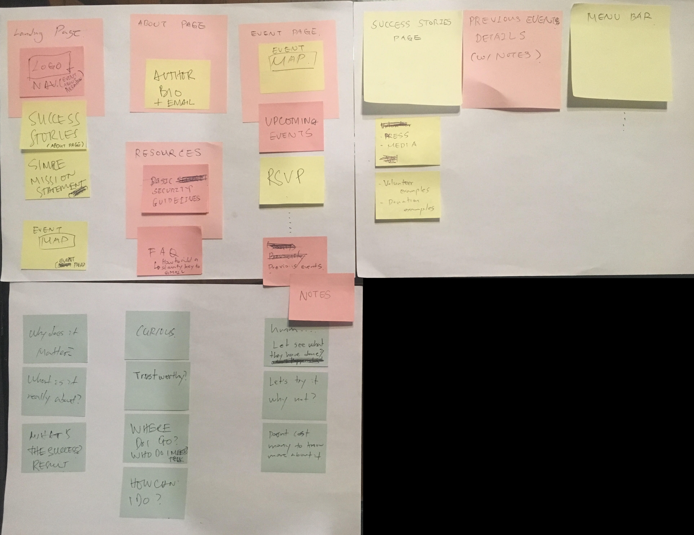

The challenge was to redesign Tech Solidarity's web site in order to improve the onboarding experience so more volunteers can work on the causes they believe in.
After the last US presidential election there was a dramatic increase in attention and offers of volunteer support for organizations focused on social change. San Francisco web developer Maciej Ceglowski founded the grassroots group, Tech Solidarity, as a way to direct the burst of energy that he was seeing, and now there are several independently-run chapters across the country. Tech Solidarity wants to “motivate the tech/creative community to use its considerable power, skills, and resources for social good” by connecting tech workers (coders, designers, engineers, data security pros, etc) with social justice causes in their own cities.
Our assignment for the School of VIsual Art’s (SVA) Summer Intensive Practice of Interaction Design course was to redesign the Tech Solidarity website to improve the onboarding experience.The success of our changes would be measured by the increase of volunteers and donations to the social justice organizations Tech Solidarity supports.
Our project team was Anna Luiza de Almeida Verani, the UI lead, and me, the UX lead. As an activist and community volunteer, I think a lot about how technology can effectively translate individual passion to collective action. The key is facilitating efficient and impactful connections between organizations and individuals that meet the needs of both participants. Our first step was to get a clear picture of what tech workers brought to the table, and what needs organizations were trying to meet with their communities.
Research
We conducted an audit of the present user experience and content available on the Tech Solidarity website. We found the following primary ‘problem trends’:
Tech Solidarity’s Home Page was a confusing introduction to the organization and how individuals could engage with programs.
Although in person meet-up events are the primary vehicle for recruiting volunteers and creating org-volunteer connections, the site was not designed to convince prospective volunteers to join an event.
As you can see above, the main page has a couple of short paragraphs with the mission statement, objective of how the events will be organized, and a way to email the founder directly to join, without any specifics on what joining means (RSVP to an event?, creating own city chapter?).
The home page also has a list of cities, which are presumably the chapters that are active, and that do not have links. There are three links on the side bar to “About”, “Events” and “Resources”.
So if prospective volunteers would want to find out a little more about Tech Solidarity, they would click on the “About” link and… nothing happens because they get taken back to the home page, which they are already on!
Currently, the site is not designed to convince them to join an event. This initial touchpoint might take place on social media like Twitter, or word of mouth. So the site at that moment of writing just gives the prospective volunteer information about the events they can assist. Those people wanting to volunteer can then click on “Events” and they will find a list of events in chronological order and separated by “Upcoming Events”, which has only two items listed with the date and the city, and by “Previously”, which has 29 past events, also with the date and the city.
They can click on each of those upcoming events and it can either give them a long description of who the speaker is, what organization they come from, why it matters, and details like the time and place.
Or it could offer a much smaller description with the details of time and place, and just of a list of the speakers, their organizations and the topic they will be discussing. In all, the way to RSVP is to contact Maciej Ceglowski by email or Signal to get “a rough head count”. Though this seems optional since the event location is listed and anyone can just show up.
Someone wanting to volunteer can also see the events that have passed, but can only click and see the description of the event of four out of the twenty-nine events that have already passed. Also three of those events have meeting notes with detailed description of what each speaker said, lightning talks, discussions and next steps. On those next steps, there is reference to “action items” on the NYC wiki, but no link to the wiki and no way to find it on the site.
The “Resources” link reaffirms Tech Solidarity’s concern with data privacy as one of the major causes that tech workers could volunteer in. The link leads to three other wiki-style pages on “security guidelines”, “security key FAQs” and a guide in adding a security key to Gmail.

Our challenge (and opportunity!) was to use the existing Tech Solidarity site elements to create a pleasurable and useful online pathway leading to a direct organizational connection for prospective volunteers. We needed to design the experience so that a prospective volunteer, who might not have a lot of time, could quickly understand where she or he could fit in and how to take the next offline step.
Our team wanted to start with just the basic information that would intrigue the prospective volunteer to continue on to the next step of the onboarding process. Our key onboarding metric was the accumulation of all these steps that lead to the volunteer to connect with an organization or project. At the same time, we wanted the onboarding experience to have different tiers to get involved in a cause for those who might not have the time or who might need more convincing.
I created this journey map for the specific user flow of getting a prospective volunteer to find the best volunteering option based on the content audit and initial user research. I categorized user goals at each stage of the onboarding process with the specific channels, features and steps that allow the user to go onto the next stage. I also identified thoughts, feelings and pain points that a user might encounter at each stage so that we could be aware of ‘make or break’ points for a users. The journey map became our guide to design the flow of the user’s experience to find a cause to volunteer in or donate to.
Initial prototypes
In our first design sprint we created an initial prototype for a new prospective volunteer user flow, drawing the different phone screens on paper and using sticky notes, and simulating the interaction with the Marvel app.
We tested the paper prototype with a group of tech colleagues. The most important feedback was:
- The ‘about’ language for Tech Solidarity needs to be more give more details on Tech Solidarity’s mission and how it sets out to accomplish it.
- The language around choices for prospective volunteers is vague and confusing , such as the filtering options for upcoming events.
- We need to see more details about volunteer options so users can make informed decisions about where to spend their energy: date, hours needed, next steps, line of work, problems that needed solving, etc.
Site structure
For the next design sprint, we created site wireframes incorporating feedback from the user testing, such as:
- Three sentences set up as steps, highlighted on top, to show how a person gets connected to an organization to volunteer with. This will allow the user understand what Tech Solidarity does and also visualize the path forward on the site. It will adjust expectations and the mental model on what is possible within the site.
- Show that volunteering and events are different things by having separate tabs in the menu and within the explanation of how to contribute, while also having different featured events, challenges and projects. This will not only help clarify the options that volunteers can contribute in, but also give a glimpse on the types of projects that exist.
- Making need and impact the primary way to showcase what the project is about, so that users get just enough important information on how they can get involved and why it matters.
- Changing the language of the filters from “Cause” and “Type” to “What do you care about?” and “What are you good at?, so that volunteers get a better sense of the options ahead of them, but also allow them to reflect on their choices through a more personal and conversational ask.
- Focusing on a small description of the problem, need, solution and impact within each project page as the necessary information to peak a volunteer’s interest and help dispel confusion on what is needed for the project so to get her or him quickly make a decision on whether to join or not.
We tested again with relevant digital workers and we found that:
- The number list was confusing for some.
- Navigation needs to be better when filtering out the opportunities.
- Missing feedback at each stage a user takes action such as when submitting the form: "Is someone contacting me?"
- Language needs to be more fun and direct.
Before improving the flow again, we fleshed out the visual elements.
Visual design
For our brand persona of the site, we combined the integrity, and willingness to act of Edward Snowden with the intelligence, but wry self-deprecating informative humor of John Oliver.
We wanted the site to be:
- Serious, but witty
- Idealistic, but knowledgeable
- Bold, but not arrogant
- Poignant, but not alienating/self-righteous
- Approachable/kind, but purposeful
On the visual style, we used minimal colors so the design didn’t distract from the goal (greys, white, black, and one or two other colors): black shows seriousness and boldness, white is idealistic and thoughtful. A bit of color gives it kindness and does not alienate (yellow or red), and the minimal use of colors (and thus no clutter) makes the site purposeful and serious.
We also included interactive elements and engagement methods to delight and surprise as a user navigates the site:
- The use of the donut after submitting the form makes it feel friendly.
- At the beginning, there is automatic trigger to geolocate the users to show them the event or volunteer options happening around them that are relevant (prompting them to allow geolocation, of course), making the site feel purposeful and serious.
- An inspirational gif or quote that is randomized creates a sense of anticipation.
- Feedback of what filters have been selected.
- Every time users select something, the sentence changes and acknowledges their selection.
- The dynamic paragraph on top of the home page image gives a glimpse into Tech Solidarity by having a changing link with the different locations Tech Solidarity and another changing link with the different success stories that already have been done.
See the Pen Paragraph change by Eric French (@ericfrenchmonge) on CodePen.
These interactions are created to inspire prospective volunteers so they feel optimistic that what they will do will really help out, and be encouraged that they will be part of a larger community of like-minded do-gooders.
Final prototype
After deciding how our site will look and how it would function, we created a final prototype with the feedback from testing the wireframes and then testing the visual design. We made sure to:
- List out the steps so it reflects how the user would navigate the site.
- Be more direct and fun with language, and give users feedback so they know what to expect each stage of the way. For example, as the user selects filters across the site, the next screen has two sentences that change and acknowledge the selection, like "Awesome, we always need more volunteers" and "Cool! I wish I could code as well".
- Unclutter each page to keep it to the bare minimum so the user is not distracted from going on to the next stage.
- On the mobile version, if the user swipes or taps on an arrow they will swipe to another mini screen to see all the steps. The same happens when sliding along the options in the location. This way, we use the small screen constraints more efficiently.
- When filtering (and the dynamic changing of volunteering options), a user gets immediate feedback so it shows user the filters they already selected.
Conclusion
I have worked in community organizations both as a volunteer looking to connect with a cause and from within an organization looking for volunteers. The initial connection, where the right volunteer knocks on the door of the right organization, is extremely important. If the volunteering experience for both parties works well, it inspires each to reach out to new experiences with new community actors, enlarging the action networks that bring about social change.
The experience that Tech Solidarity provides has to motivate users to take action and be emotionally resonant. For prospective volunteers to get inspired and commit to join a cause, the technology facilitating this process has to reassure them with meaningful information and engage them with an easy to follow path guiding them toward their goal as seamlessly as possible.
Each interaction in the site has to be dynamic and provide them with constant and immediate feedback. Filters should provide the right balance of choices to help them get to the best option. Visual elements and content need to enhance each other so each option has what it takes to make the best informed decision. It should give prospective volunteers a sense of what it would be like to work together with that organization, visualize how they would fit in, and making it simple and pleasurable to convince them they are joining a cause that they will bring the most meaningful impact. By being conversational and streamlining the information and options so the user can quickly get to where they want to, our redesign of Tech Solidarity creates a shortcut to inspire volunteers to join a cause they believe in.